Couch co-op from afar
Stream a game from your PC and pass your friends the controller, as if they were on your couch.
Free and open source · Windows and Linux · No account
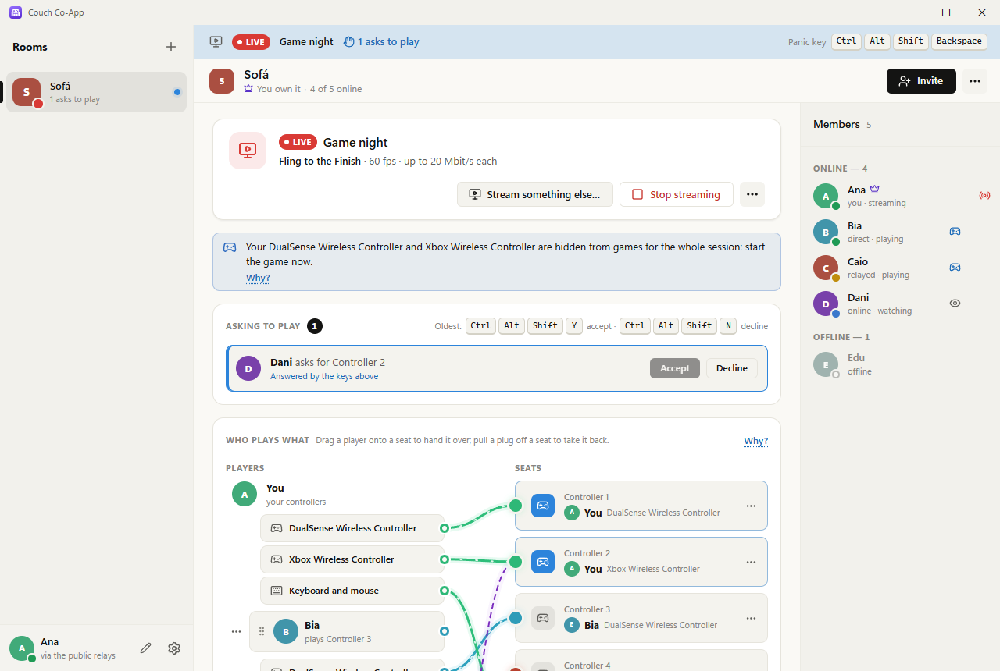
What this is
A free desktop app for playing games together over the internet, the way you would on one couch.
One person, the host, runs the game and streams it to friends in a room. Everyone sees and hears it. The host passes controllers around, and each friend's controller plays the game on the host's PC.
Only the host needs the game. No accounts, no cloud: a room lives on its members' PCs.
How it works
A name and a password. The room stays for the next game night.
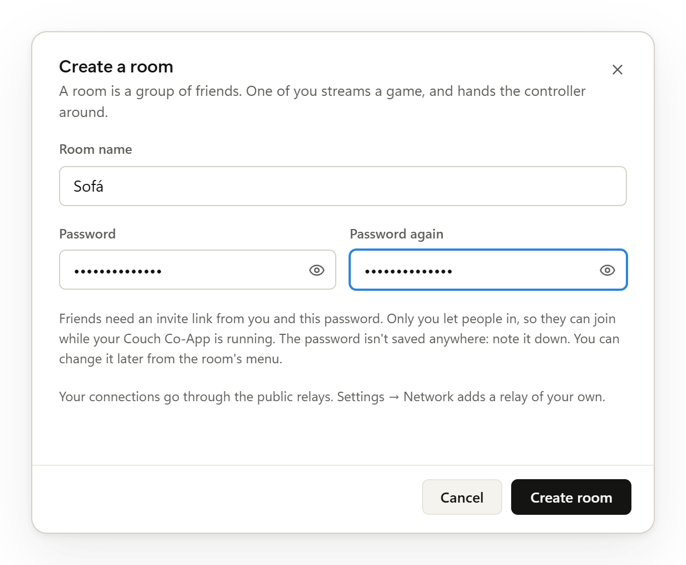
Send the room's link, and the password separately. The link also offers the app to whoever doesn't have it.
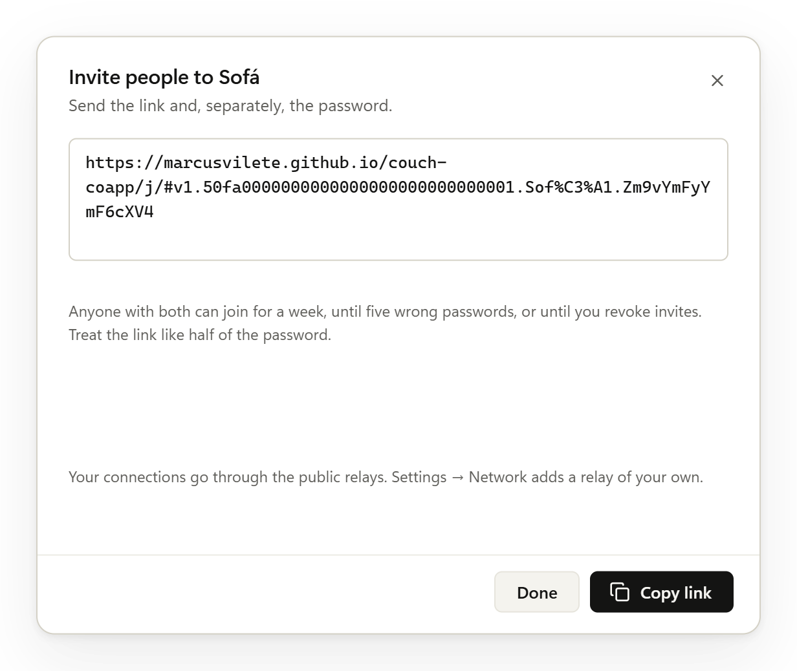
Pick the game's window. Friends click Watch, and see and hear it in a window of their own.
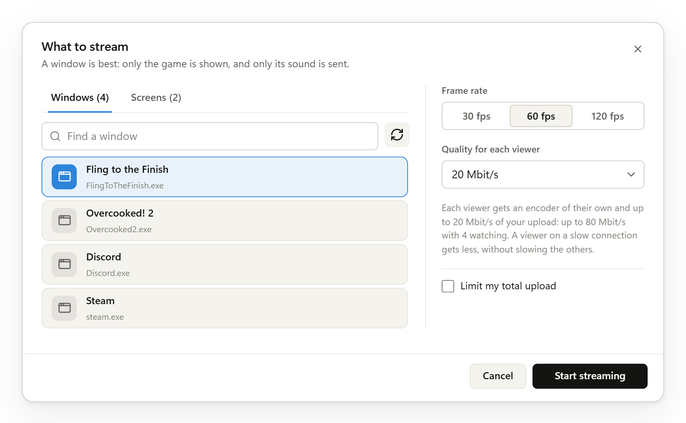
A friend asks, you accept, and their controller plays your game. Take it back or pass it on any time.
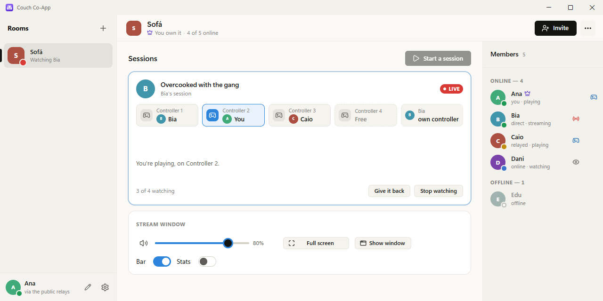
Behind the scenes
- The picture: the host's PC captures the game's window, compresses it on the graphics card and streams it to each friend, adapting to their connection.
- The controllers: the app plugs virtual Xbox controllers into the host's PC, and each friend's controller drives one. The game sees ordinary controllers.
- The connection: direct and encrypted between the PCs; through a relay when that isn't possible.
Features
Up to 4 controllers and a keyboard-and-mouse seat. 1 to 7 friends watching.
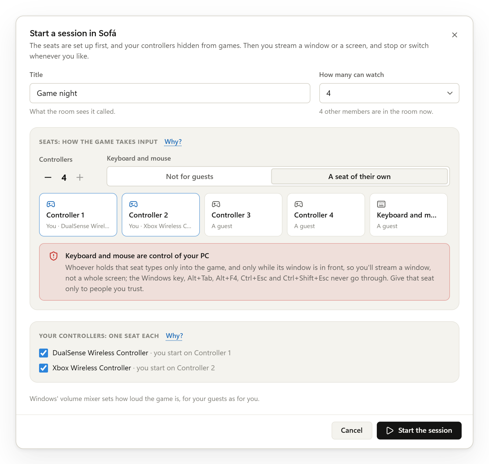
Every seat at a glance. Drag a friend onto a seat or pull them off, and play along with your own controllers.
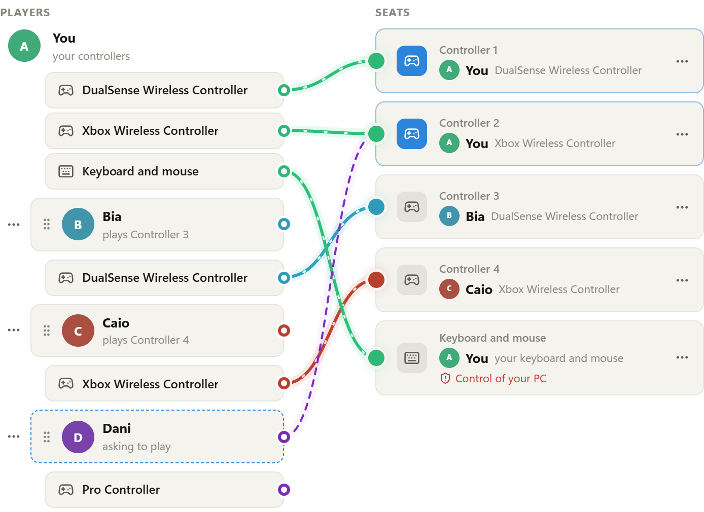
Pens, arrows, boxes, text and pictures over the game, seen by everyone. Off until the host turns it on.
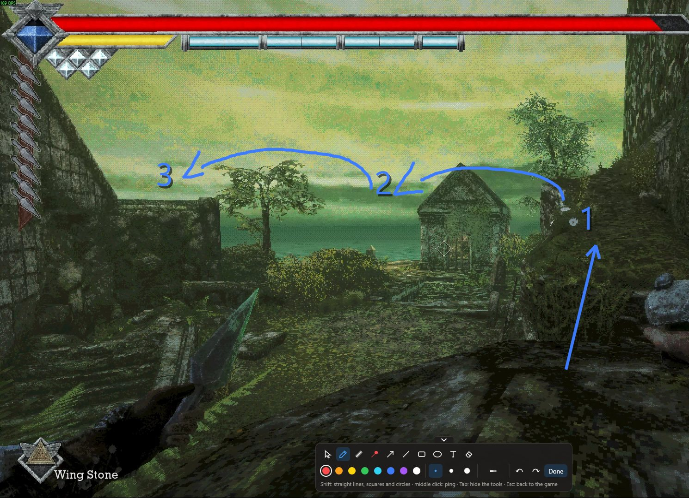
A session with no controllers, just to watch.
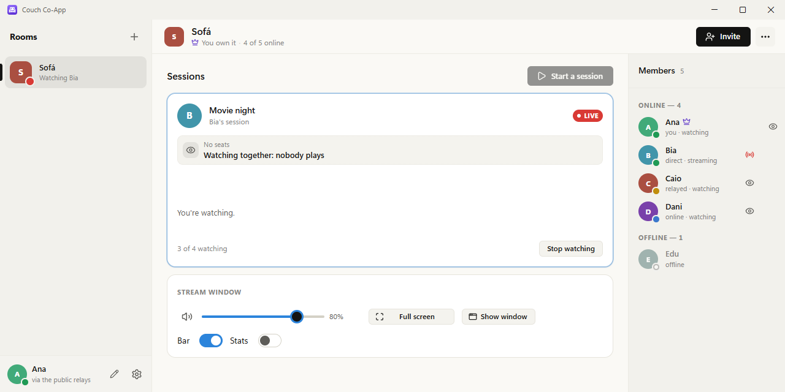
Run your gaming PC's sessions from your laptop, unlocked with a PIN.
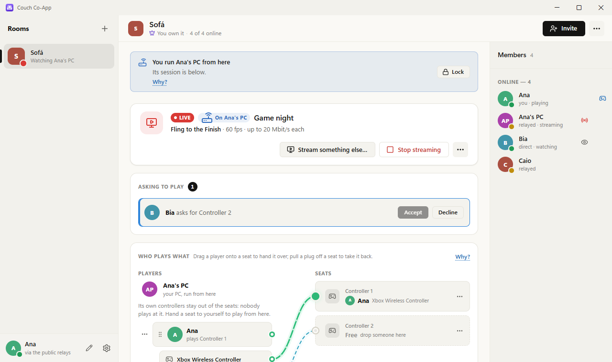
A game on an HDR monitor reaches friends in the right colours, not washed out (Windows). Drag across the picture to compare.
Watch and play on Linux, and host on KDE or GNOME. A Steam Deck watches and plays.
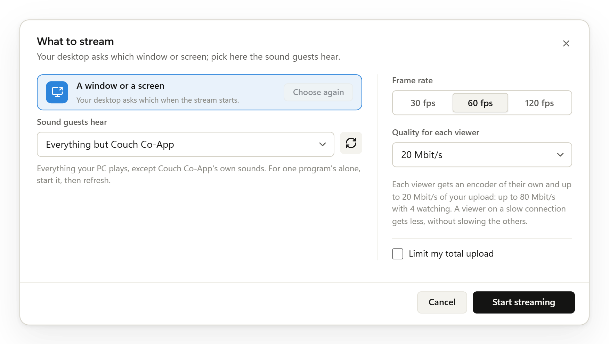
Only with people you trust
A controller presses buttons on your PC; a keyboard types on it. Play only with people you trust. The app's limits:
- You approve every handover.
- Guests get a controller only. Keyboard and mouse is a separate seat, for one person at a time.
- Their keys reach only the game, while its window is in front. The Windows key, Alt+Tab, Alt+F4, Ctrl+Alt+Delete and the like never pass.
- The panic key, Ctrl+Alt+Shift+Backspace, takes back every seat. Guests can't press it.
- Held keys and buttons are let go on every handover and disconnect.
- Only the room's owner lets people in, with an invite and the password.
Relays?
The PCs connect directly when they can. Some routers and most mobile networks block that; then a relay, a small server on the internet, passes the traffic along. It's encrypted: the relay can't read it.
Out of the box
iroh's free public relays: shared by everyone, for testing and hobby use, with no guarantees. Fine for trying.
Your own
A small Linux server (free tiers work). Add its code once, and your rooms pass it on to your friends. How to set one up
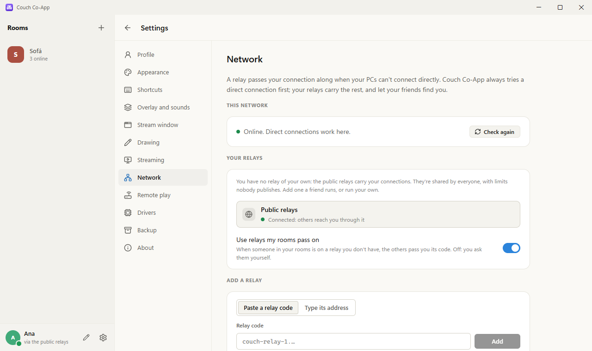
What you need
To host
- Windows 10 or 11, or Linux with KDE or GNOME
- The game
- Upload for each friend watching: up to 20 Mbit/s each by default
To play
- A Windows or Linux PC, or a Steam Deck
- A controller, or keyboard and mouse
Not on macOS, phones or tablets yet.
Questions
Does it cost anything?
No. It's free software (GPL-3.0).
Do my friends need the game?
No. It runs only on the host's PC.
Which games work?
Any game, with up to 4 controllers and/or keyboard and mouse.
Do I need my own relay?
No. The free public relays work out of the box. For regular game nights, a relay of your own is more dependable. How to set one up
The installer offers ViGEmBus and HidHide. Do I need them?
ViGEmBus: only to host. It's what plugs your friends' controllers into your PC. HidHide: optional. It lets your own controllers take seats too. To only watch and play, you need neither. Settings → Drivers installs either later. On Linux, neither exists.
Windows warns me about the installer.
It isn't signed, so SmartScreen warns once: "More info", then "Run anyway". Each release lists checksums to verify the download.
How do I update?
The app tells you when a new version is out. Install it over the old one.
Is it finished?
There is no such thing as finished software, I think. Most features envisioned are in, but expect rough edges. Bugs, issues and suggestions are welcome.
Who made it?
Marcus Vilete, with Claude (Anthropic's AI) writing the code. The README has the story.